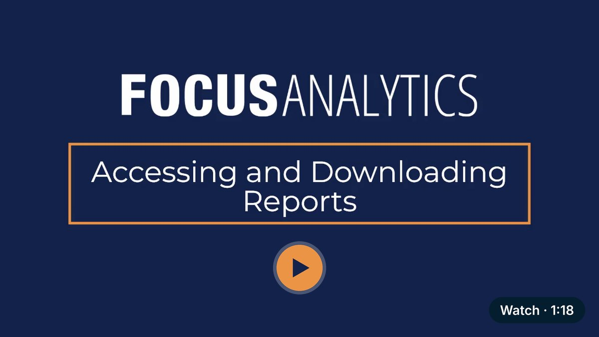
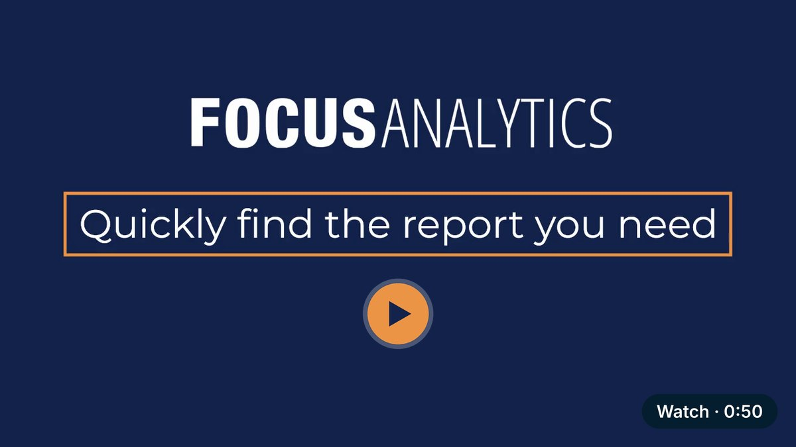
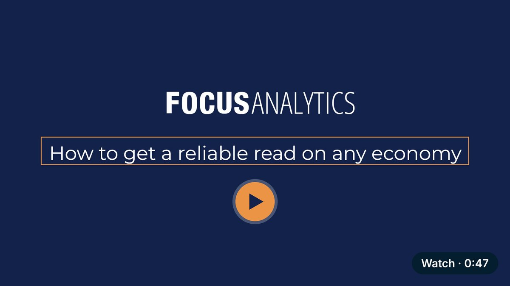
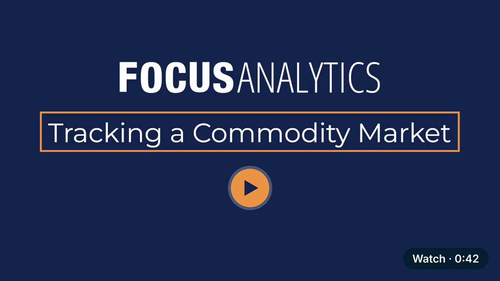
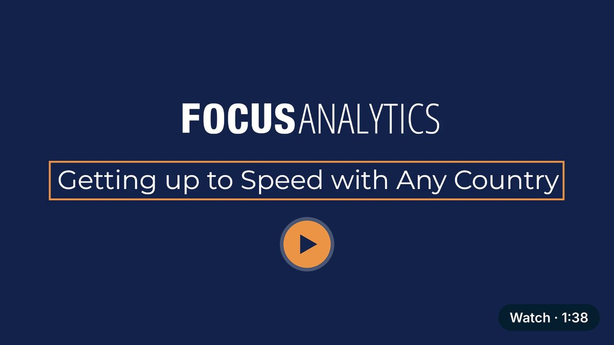
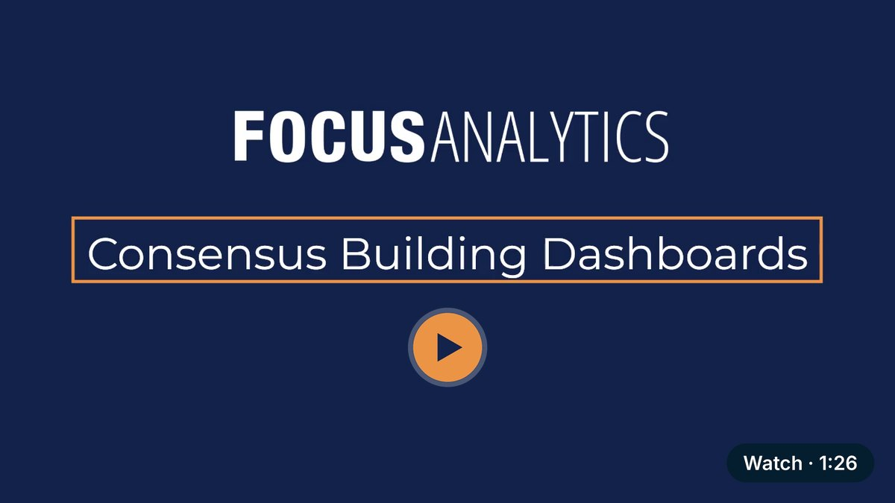
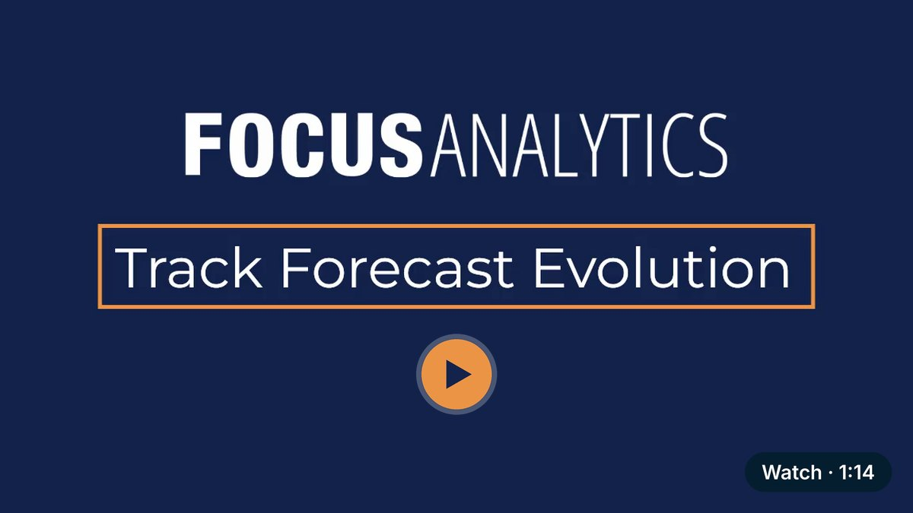
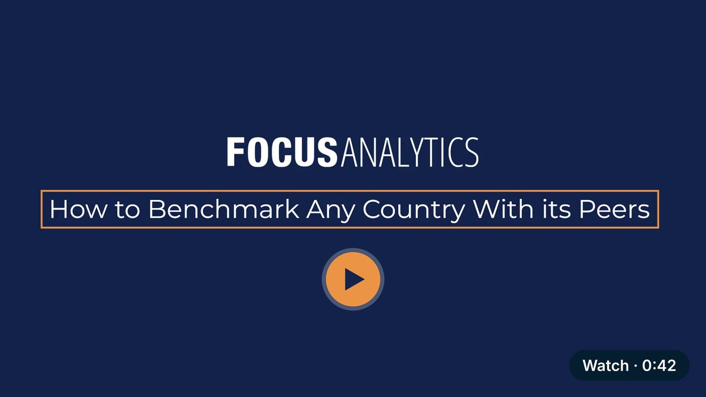
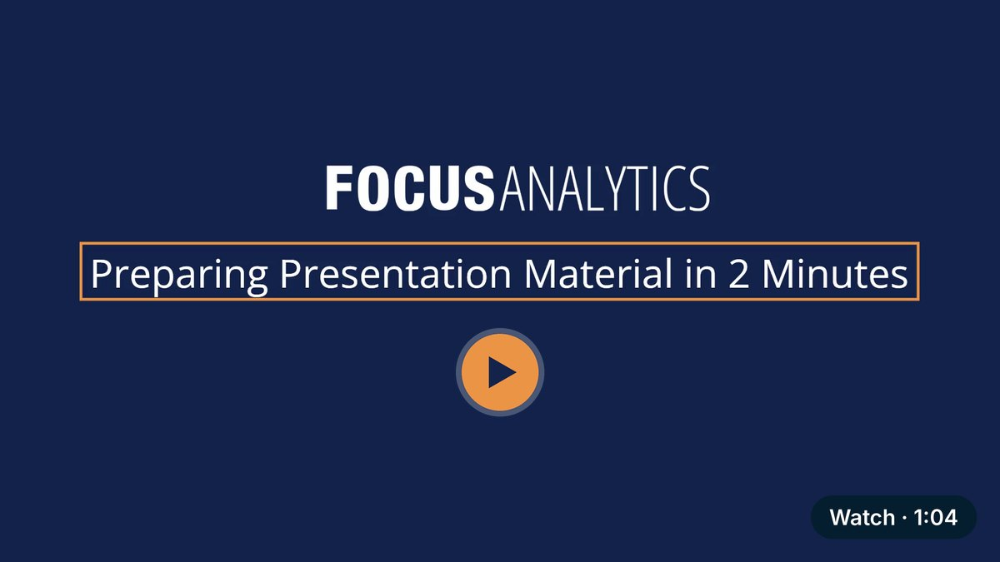
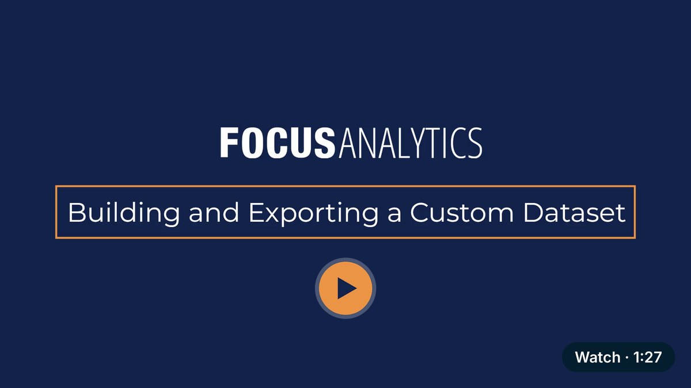

Demo video email embeds
Email can't play video, so each demo is a thumbnail with a play button that opens that video on the demo page.
Email builder: upload the image file and set its link. HTML: first upload the 11 images to the WordPress Media Library
(the code expects them at https://focus-d7op8.kinsta.storage/production/uploads/2026/11/), then paste the code.
1. Accessing and downloading reports 1:18

- Image file
email-thumbnails/demo-01-accessing-reports.jpg- Link the image to
https://www.focus-economics.com/demo-videos/#accessing-reports- HTML (for HTML or "custom code" blocks)
2. Quickly find the report you need 0:50

- Image file
email-thumbnails/demo-02-find-a-report.jpg- Link the image to
https://www.focus-economics.com/demo-videos/#find-a-report- HTML (for HTML or "custom code" blocks)
3. How to get a reliable read on any economy 0:47

- Image file
email-thumbnails/demo-03-read-any-economy.jpg- Link the image to
https://www.focus-economics.com/demo-videos/#read-any-economy- HTML (for HTML or "custom code" blocks)
4. Tracking a commodity market 0:42

- Image file
email-thumbnails/demo-04-track-a-commodity.jpg- Link the image to
https://www.focus-economics.com/demo-videos/#track-a-commodity- HTML (for HTML or "custom code" blocks)
5. Getting up to speed with any country 1:38

- Image file
email-thumbnails/demo-05-country-deep-dive.jpg- Link the image to
https://www.focus-economics.com/demo-videos/#country-deep-dive- HTML (for HTML or "custom code" blocks)
6. Consensus building dashboards 1:26

- Image file
email-thumbnails/demo-06-consensus-dashboards.jpg- Link the image to
https://www.focus-economics.com/demo-videos/#consensus-dashboards- HTML (for HTML or "custom code" blocks)
7. Track forecast evolution 1:14

- Image file
email-thumbnails/demo-07-forecast-evolution.jpg- Link the image to
https://www.focus-economics.com/demo-videos/#forecast-evolution- HTML (for HTML or "custom code" blocks)
8. How to benchmark any country with its peers 0:42

- Image file
email-thumbnails/demo-08-benchmark-peers.jpg- Link the image to
https://www.focus-economics.com/demo-videos/#benchmark-peers- HTML (for HTML or "custom code" blocks)
9. Building credible best and worst cases 1:18
- Image file
email-thumbnails/demo-09-best-worst-cases.jpg- Link the image to
https://www.focus-economics.com/demo-videos/#best-worst-cases- HTML (for HTML or "custom code" blocks)
10. Preparing presentation material in 2 minutes 1:04

- Image file
email-thumbnails/demo-10-presentation-material.jpg- Link the image to
https://www.focus-economics.com/demo-videos/#presentation-material- HTML (for HTML or "custom code" blocks)
11. Building and exporting a custom dataset 1:27

- Image file
email-thumbnails/demo-11-custom-dataset.jpg- Link the image to
https://www.focus-economics.com/demo-videos/#custom-dataset- HTML (for HTML or "custom code" blocks)